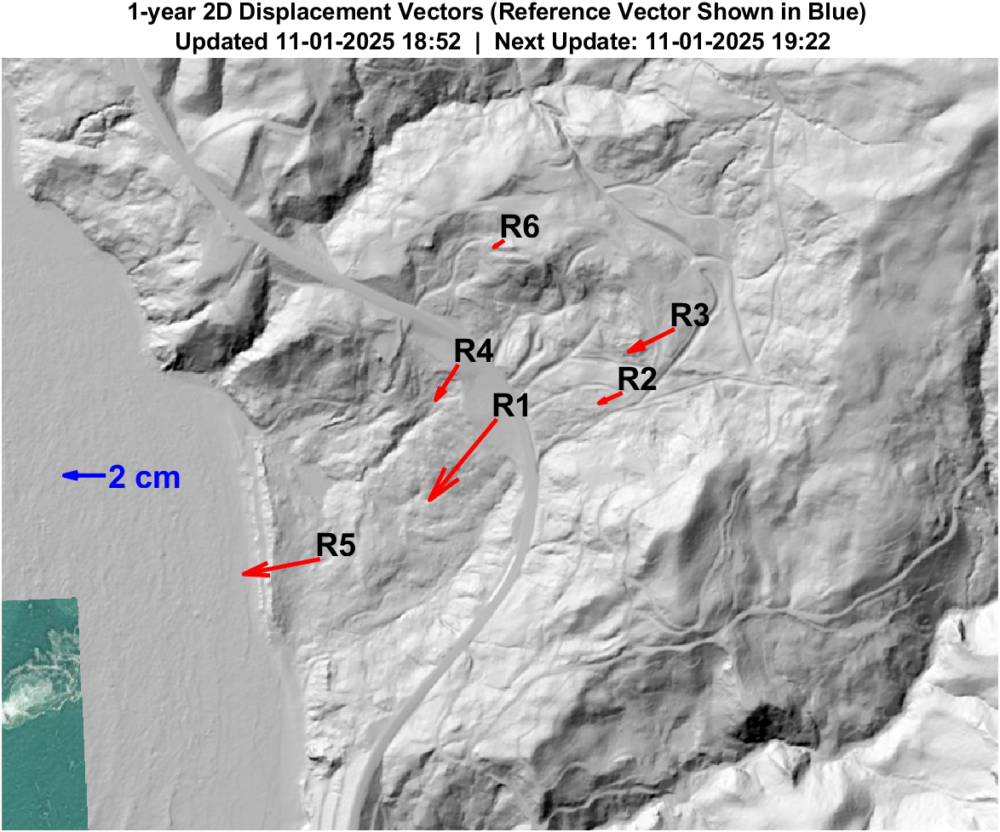

Hooskanaden Landslide

Location of RTK-GNSS rovers on the Hooskanaden Landslide. All locations are approximate.
Cumulative 3D displacement of RTK-GNSS rovers over the past 30 days. Shaded regions represent the uncertainty bounds (±1 standard deviation).
30-Day 2D displacement vectors. Reference vector length shown in blue. Basemap source: Oregon LiDAR Consortium.
Note: Minimal displacements (i.e., less than 1 cm) may produce inaccurate trajectories due to GNSS noise.
Cumulative 3D displacement of RTK-GNSS rovers over the past year. Shaded regions represent the uncertainty bounds (±1 standard deviation).
1-Year 2D displacement vectors. Reference vector length shown in blue. Basemap source: Oregon LiDAR Consortium.
Systems installed on September 11, 2020.